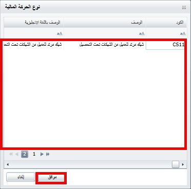
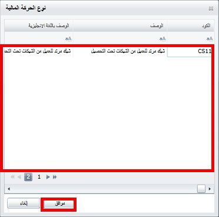
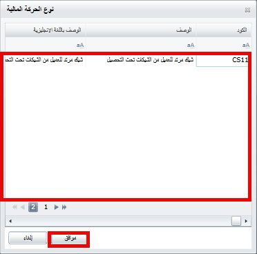

يتم فيه عمل تحصيل من حساب العميل الى حساب الخزينة مباشرة
يتم عمل تحصيل من حساب العميل الى حساب المندوب في عهدته
يتم عمل قيد الغاء لحركة تحصيل لحساب الخزينة
يتم عمل الغاء لحركة تحصيل لحساب الموظف
 

يتم فيه عمل تحصيل من حساب العميل الى حساب الخزينة مباشرة
يتم عمل تحصيل من حساب العميل الى حساب المندوب في عهدته
يتم عمل قيد الغاء لحركة تحصيل لحساب الخزينة
يتم عمل الغاء لحركة تحصيل لحساب الموظف



 وكتابة بيانات الحركة
وكتابة بيانات الحركةتاريخ الحركة-وسف الحركة-اسم الموظف